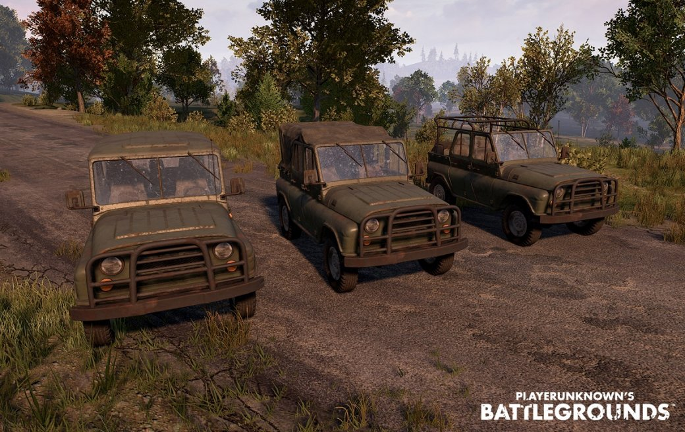
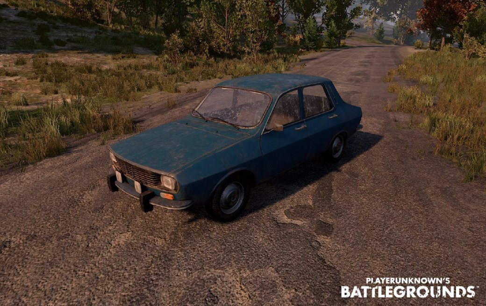

УАЗ-469

Технические характеристики машины:
- Количество мест: 4
- Максимальная скорость: ~ 99км/ч
- Плюсы: быстрая и закрытая со всех сторон, не так быстро взрывается после попадания пуль, вместительна и экономична в плане расхода топлива
- Минусы: для передвижения по горам не предназначена, плохо набирает скорость
Седан Dacia 1300

Технические характеристики машины:
- Количество мест: 4
- Максимальная скорость: ~ 113 км/ч
- Плюсы: быстрая и закрытая со всех сторон, не так быстро взрывается после попадания пуль, вместительна и экономична в плане расхода топлива
- Минусы: для передвижения по горам не предназначена, плохо набирает скорость
Багги
Технические характеристики машины:
- Количество мест: 2
- Максимальная скорость: ~ 100км/ч
- Плюсы: проходимость по горам, удобна в управлении, мало расходует топлива
- Минусы: только 2 места, открытый каркас, низкая скорость и большие колеса, которые легко пробить выстрелом
Мотоцикл c коляски
Технические характеристики машины:
- Количество мест: 3
- Максимальная скорость: ~ 135км/ч
- Плюсы: быстро набирает скорость, одно из самых быстрых транспортных средств после мотоцикла без коляски, самое экономичное транспортное средство в плане расхода топлива
- Минусы: плохая маневренность и плохая проходимость, пассажиры и водитель уязвимы для врага
Мотоцикл без коляски
Технические характеристики машины:
- Количество мест: 2
- Максимальная скорость: ~ 150км/ч
- Плюсы: все те же плюсы
- Минусы: все те же минусы, кроме плохой маневренности
Катер ПГ-117
Технические характеристики машины:
- Количество мест:7
- Максимальная скорость: ~ 90км/ч
- Плюсы: может вместить всех в команде, хорошая управляемость
- Минусы: плохая маневренность, полная открытость верхней части
Пикап 4х4
Технические характеристики машины:
- Количество мест: 4
- Максимальная скорость: ~ 115км/ч
- Плюсы: вместительность, хорошая проходимость, закрытый корпус в версии без кузова
- Минусы: большой расход топлива, сложно управлять машиной на бездорожье
Микроавтобус VW T1
Технические характеристики машины:
- Количество мест: 6
- Максимальная скорость: ~ 80км/ч
- Плюсы: одна из самых прочных и защищенных машин в игре с большим количеством пассажирских мест
- Минусы: плохая управляемость на неровной местности, небольшая скорость и максимальный разгон
Гидроцикл
Технические характеристики машины:
- Количество мест: 2
- Максимальная скорость: ~ 85км/ч
- Плюсы: высокая маневренность и мобильность, пассажир может производить отстрел врага во время движения гидроцикла
- Минусы: незащищенность водителя и пассажира